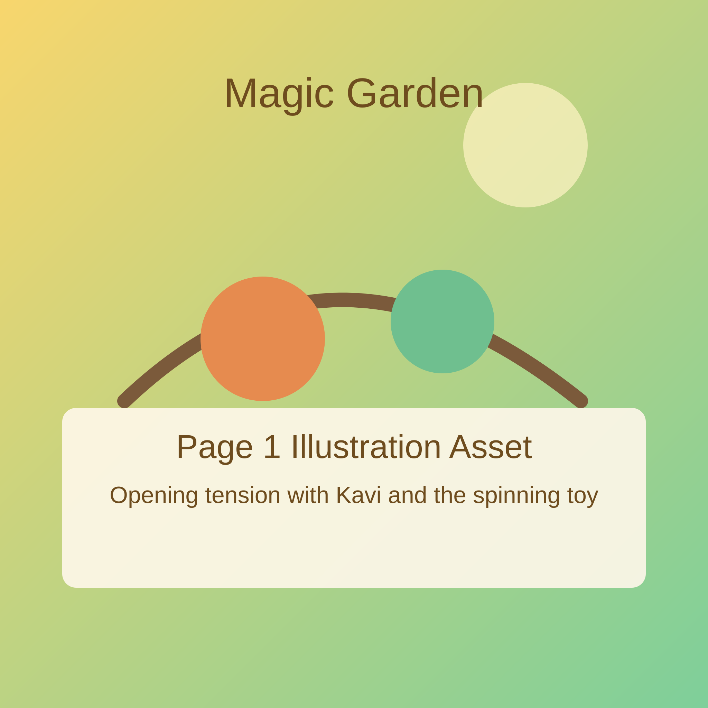
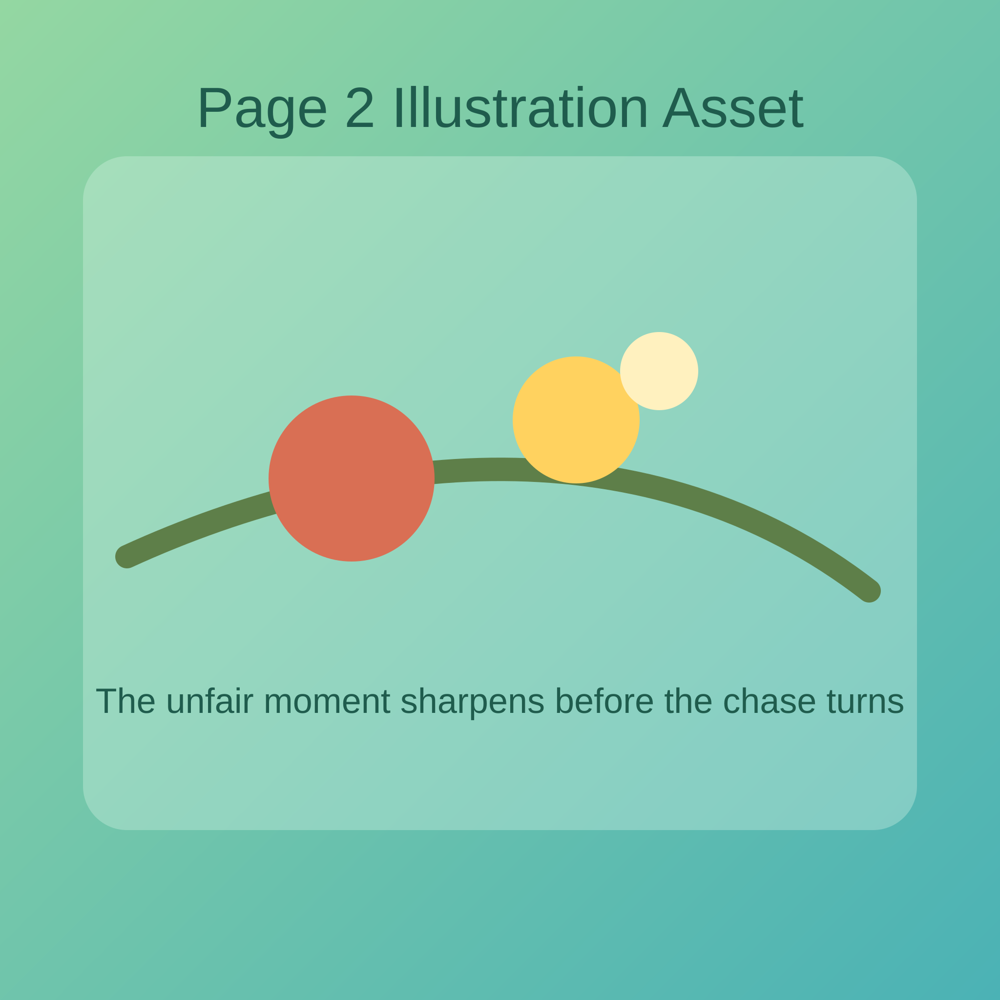
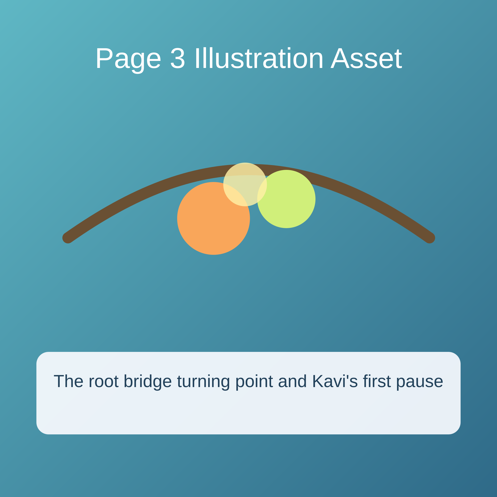
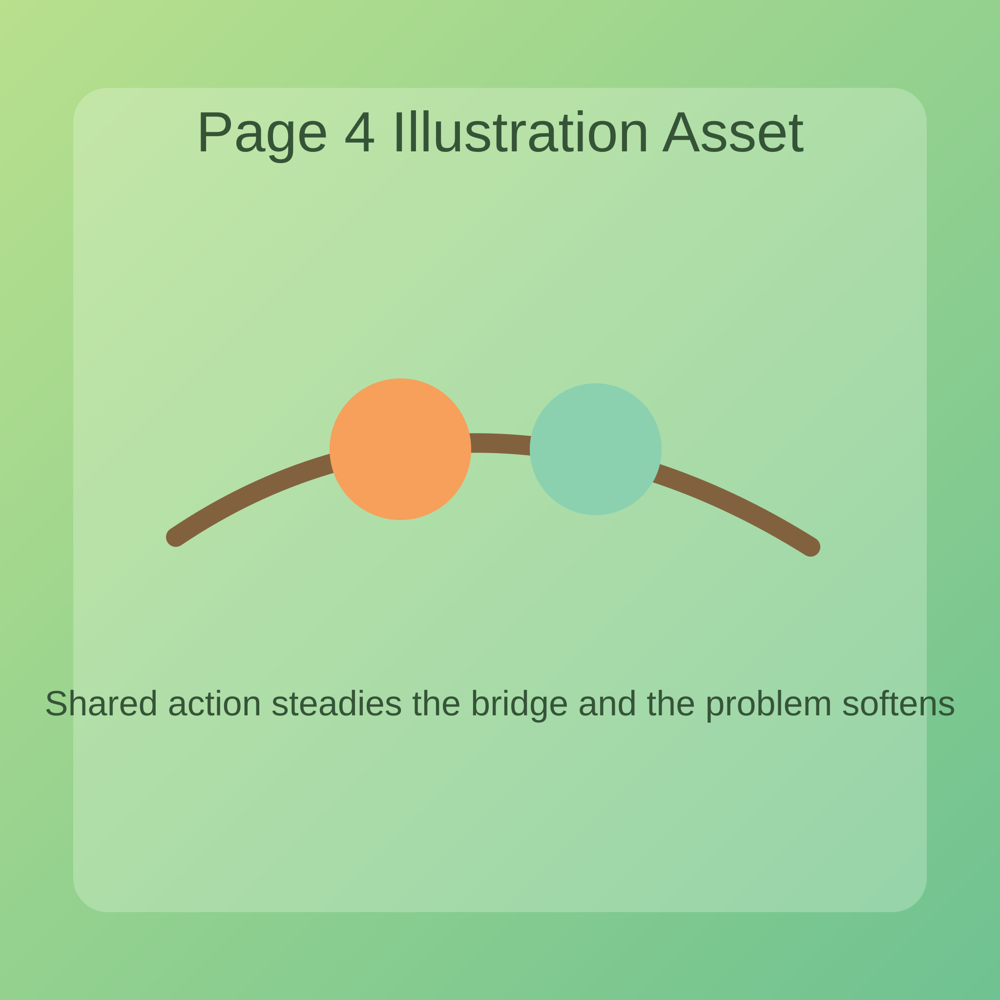
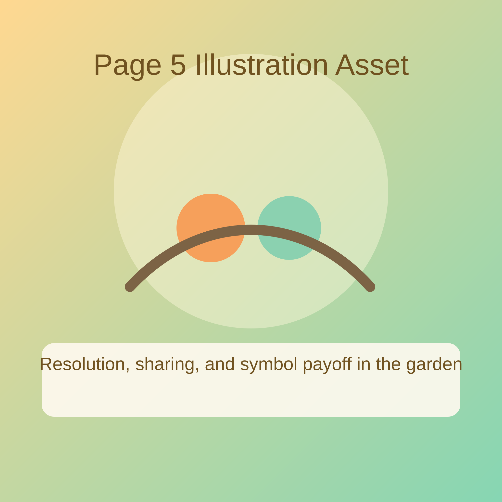

Kavi scampered through the Magic Garden with a brand-new spinning toy tucked under one arm. When another child grabbed it first, hot feelings rushed up so fast that Kavi wanted to snatch it back and shout right away.

The unfair moment felt as sharp as a thorn, and Kavi forgot every calm thought except, "I have to react when things feel unfair." Near the path sat a round, sheltering shape that reminded Kavi of shelter, but in that first flash of anger Kavi was too upset to notice what it meant. Kavi charged after the toy, then stopped when the bamboo path bent and the other child stumbled near a wobbly bridge of roots. If Kavi kept rushing, both children could get hurt and the toy might tumble into the stream below. Heart thumping, Kavi remembered the mission to face a fear and realized that this inner conflict was not only about the toy, but also about what happened inside.

Kavi pressed both hands to that big belly feeling, took one slow breath, then another, and finally said, "Wait. Let's fix this safely." The pause changed the whole moment.

Together, the children steadied the bridge, picked up the toy, and sat quietly under the tall green stalks. Kavi still felt the unfairness, but it no longer bossed every choice. Looking at the sheltering curve nearby, Kavi understood that real strength could feel soft and steady at the same time.

So when the other child offered the toy back, Kavi smiled and said, "We can both take turns." In that gentle choice, Kavi truly discovered, "I can pause and choose my response." The game began again, and this time the laughter sounded freer than before.